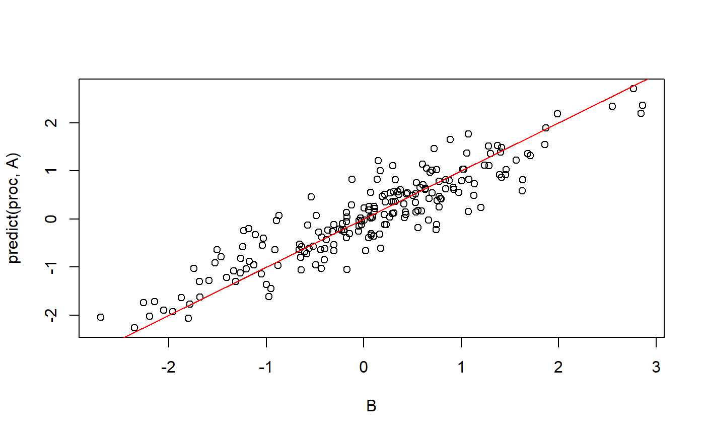

Procrustes transform Y = pXR (after centering), where p is a scaling coefficient and R is a rotation matrix that minimize ||Y - pXR||_F.
procrustes(Y, X, n_iter_max = 1000, epsilon_min = 1e-07)Reference matrix.
Matrix to transform (ncol(X) >= ncol(Y)).
Maximum number of iterations. Default is 1000.
Convergence criterion. Default is 1e-7.
Object of class "procrustes", a list with the following elements:
$R: the rotation matrix to apply to X,
$rho: the scaling coefficient to apply to X,
$c: the column centering to apply to the resulting matrix,
$diff: the average difference between Y and X transformed.
You can use method predict() to apply this transformation to other data.
A <- matrix(rnorm(200), ncol = 20)
B <- matrix(rnorm(length(A)), nrow = nrow(A))
proc <- procrustes(B, A)
str(proc)
#> List of 4
#> $ R : num [1:20, 1:20] 0.3607 -0.3925 0.2973 -0.0806 0.0411 ...
#> $ rho : num 0.942
#> $ c : num [1, 1:20] 0.184 0.422 0.555 0.352 -0.107 ...
#> $ diff: num 0.177
#> - attr(*, "class")= chr "Procrustes"
plot(B, predict(proc, A)); abline(0, 1, col = "red")
